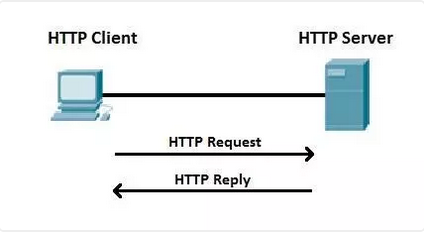
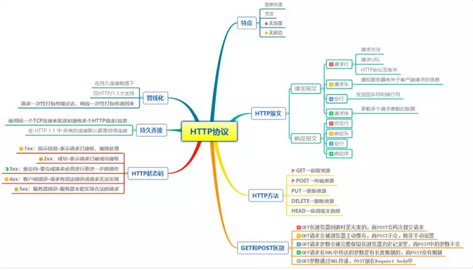
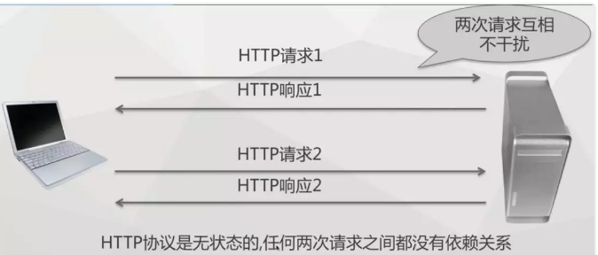
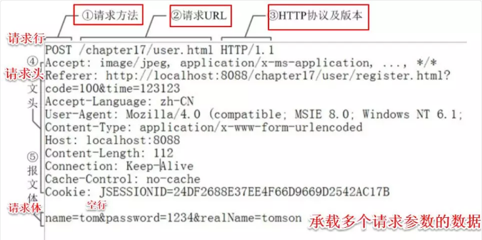
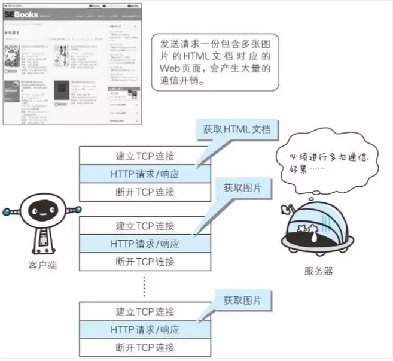
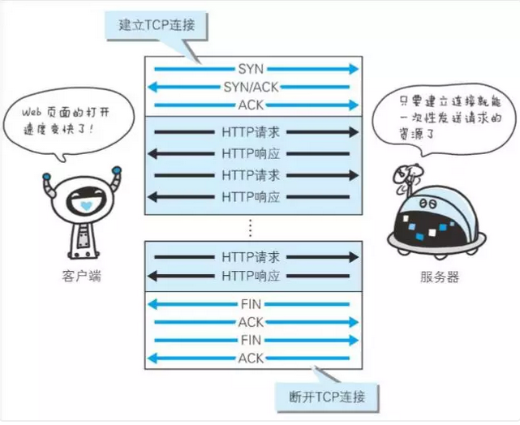
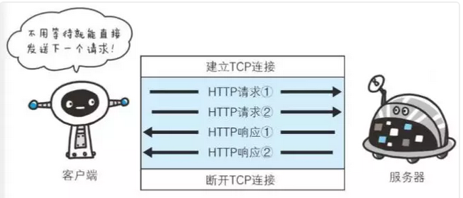

引言
HTTP协议是Hyper Text Transfer Protocol（超文本传输协议）的缩写,是用于从万维网服务器传输超文本到本地浏览器的传送协议。HTTP 是基于 TCP/IP 协议通信协议来传递数据（HTML 文件、图片文件、查询结果等）。它不涉及数据包（packet）传输，主要规定了客户端和服务器之间的通信格式，默认使用80端口。

一、Http的特点
1、简单快速：客户向服务器请求服务时，只需传送请求方法和路径。请求方法常用的有GET、HEAD、PUT、DELETE、POST。每种方法规定了客户与服务器联系的类型不同。由于HTTP协议简单，使得HTTP服务器的程序规模小，因而通信速度很快。
2、灵活：HTTP允许传输任意类型的数据对象。
3、无连接：无连接的含义是限制每次连接只处理一个请求。服务器处理完客户的请求，并收到客户的应答后，即断开连接。采用这种方式可以节省传输时间。
4、无状态：HTTP协议是无状态的，HTTP 协议自身不对请求和响应之间的通信状态进行保存。任何两次请求之间都没有依赖关系。直观地说，就是每个请求都是独立的，与前面的请求和后面的请求都是没有直接联系的。协议本身并不保留之前一切的请求或 响应报文的信息。这是为了更快地处理大量事务，确保协议的可伸缩性，而特意把 HTTP 协议设计成如此简单的。

二、Http报文
Http报文包括请求报文和响应报文两大部分，其中请求报文由请求行（request line）、请求头（header）、空行和请求体四个部分组成。而响应报文由状态行、响应头部、空行和响应体四个部分组成。接下来我们详细介绍下请求报文的各个部分及其作用。

1、请求行
用来说明请求类型、要访问的资源以及所使用的HTTP版本。
POST /chapter17/user.html HTTP/1.1
以上代码中 POST 代表请求方法， /chapter17/user.html 表示URI， HTTP/1.1 代表协议和协议的版本。现在比较流行的是Http1.1版本
2、请求头
由关键字 / 值对组成，每行一对，关键字和值用英文冒号“:”分隔。
请求头部通知服务器有关于客户端请求的信息。它包含许多有关的客户端环境和请求正文的有用信息。其中比如
|
1
2
3
|
Host：表示主机名，虚拟主机。Connection：HTTP/1.1增加的，使用keepalive，即持久连接，一个连接可以发多个请求。User-Agent：请求发出者，兼容性以及定制化需求。 |
3、空行
最后一个请求头之后是一个空行，这个行非常重要，它表示请求头已经结束，接下来的是请求正文。
4、请求体
可以承载多个请求参数的数据。
name=tom&password=1234&realName=tomson
上面代码，承载着name、password、realName三个请求参数。
三、HTTP请求方法
-
GET：请求指定的页面信息，并返回实体主体。
-
HEAD：类似于get请求，只不过返回的响应中没有具体的内容，用于获取报头。
-
POST：向指定资源提交数据进行处理请求（例如提交表单或者上传文件）。数据被包含在请求体中。
-
PUT：从客户端向服务器传送的数据取代指定的文档的内容。
-
DELETE：请求服务器删除指定的页面。
四、GET与POST区别
-
GET在浏览器回退时是无害的，而POST会再次提交请求。
-
GET请求会被浏览器主动缓存，而POST不会，除非手动设置。
-
GET请求参数会被完整保留在浏览器历史记录里，而POST中的参数不会被保留。
-
GET请求在URL中传送的参数是有长度限制的，而POST没有限制。
-
GET参数通过URL传递，POST放在Request body中。
五、Http状态码
状态代码有三位数字组成，第一个数字定义了响应的类别，共分五种类别：
-
1xx：指示信息——表示请求已接收，继续处理。
-
2xx：成功——表示请求已被成功接收、理解、接受。
-
3xx：重定向——要完成请求必须进行更进一步的操作。
-
4xx：客户端错误——请求有语法错误或请求无法实现。
-
5xx：服务器端错误——服务器未能实现合法的请求。
比如我们平时常见两种出错的状态码：
403 Forbidden //对被请求页面的访问被禁止
404 Not Found //请求资源不存在，比如：输入了错误的URL
六、持久连接
1、为什么需要持久连接
HTTP协议的初始版本中，每进行一次HTTP通信就要断开一次TCP连接。以当年的通信情况来说，因为都是些容量很小的文本传输，所以即使这样也没有多大问题。可随着 HTTP 的 普及，文档中包含大量图片的情况多了起来。比如，使用浏览器浏览一个包含多张图片的 HTML 页面时，在发送请求访问 HTML 页面资源的同时，也会请 求该 HTML 页面里包含的其他资源。因此，每次的请求都会造成无谓的 TCP 连接建立和断开，增加通信量的 开销。

2、持久连接的特点
为解决上述 TCP 连接的问题， HTTP/1.1 和一部分的 HTTP/1.0 想出了持久连接（HTTP Persistent Connections，也称为 HTTP keep-alive 或 HTTP connection reuse）的方法。持久连接的特点是，只要任意一端没有明确提出断开连接，则保持TCP连接状态。

持久连接的好处在于减少了 TCP 连接的重复建立和断开所造成的额外开销，减轻了服务器端的负载。另外， 减少开销的那部分时间，使 HTTP 请求和响应能够更早地结束，这样 Web 页面的显示速度也就相应提高了。
在 HTTP/1.1 中，所有的连接默认都是持久连接，但在 HTTP/1.0 内并未标准化。虽然有一部分服务器通过非 标准的手段实现了持久连接，但服务器端不一定能够支持持久连接。毫无疑问，除了服务器端，客户端也需 要支持持久连接。
七、管线化
持久连接使得多数请求以管线化（pipelining）方式发送成为可能。从前发送请求后需等待并收到响应，才能 发送下一个请求。管线化技术出现后，不用等待响应亦可直接发送下一个请求。
这样就能够做到同时并行发送多个请求，而不需要一个接一个地等待响应了。通俗地讲，请求打包一次传输过去，响应打包一次传递回来。管线化的前提是在持久连接下。

假如当请求一个包含 10 张图片的 HTML Web 页面，与挨个连接相比，用持久连接可以让请求更快结束。 而管线化技术则比持久连接还要快。请求数越多，时间差就越明显。客户端需要请求这十个资源。以前的做法是，在同一个TCP连接里面，先发送A请求，然后等待服务器做出回应，收到后再发出B请求，以此类推，而管道机制则是允许浏览器同时发出这十个请求，但是服务器还是按照顺序，先回应A请求，完成后再回应B请求。
于是在使用持久连接的情况下，某个连接上消息的传递类似于：
请求1 -> 响应1 -> 请求2 -> 响应2 -> 请求3 -> 响应3管线化方式发送变成了类似这样：
请求1 -> 请求2 -> 请求3 -> 响应1 -> 响应2 -> 响应3